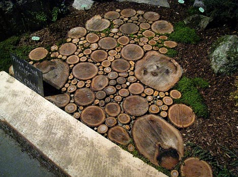
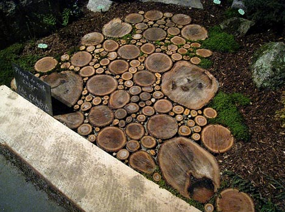
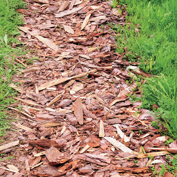
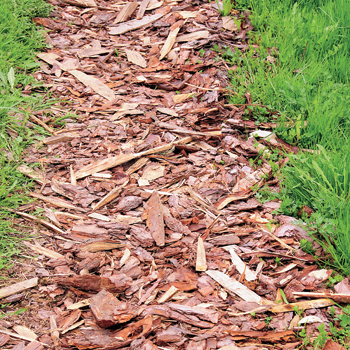

| Тропинки Черновцы |
|
Тропинки - чрезвычайно важный элемент любого садового участка - это и элемент дизайна, и элемент практичности. Они объединяют между собой все садовые зоны, при этом устраивая к ним свободный и удобный проход.
На участке с тропинками всегда будет чисто и аккуратно, они очень быстро высыхают после дождя, и весной именно с них первых сходит снег, так как они быстрее нагреваются относительно других поверхностей. Тропинки легко заметать и мыть, по ним удобно ходить. В плане дизайна их значение – крайне важно: от их формы и материала зависит наше визуальное восприятие садового участка, они сразу показывают его стилистику.
Тропинки прокладываются в соотношении с начерченным дизайном - проектом участка. И как быть, если некоторые из них не полностью "вырисовываются"? В таком случае наилучший вариант - пока что ничего не делать, по -окончании сезона их траектории появятся сами собой - Вы просто их истаптываете - это и будет самый оптимальный вариант с точки зрения эргономики. Ширина дорожек выбирается в зависимости от их будущего использования - сколько людей будет одновременно ходить по ним и или предполагается по ним перемещение садовой техники. Минимальная ширина дорожки должна быть не менее чем 70 см, чтобы по ней могли разойтись двое людей. Если же такая дорожка проходит между кустарниками, цветниками, то ее ширина автоматически увеличивается на 1 - 1,2 м.
Виды тропинок разные, они могут быть из натурального камня, кирпича, литых цементных плит, бетонные, с досок, деревянных спилов, гравия, коры из дерева, а также травяные. Часто встречаются и разные комбинации всего перечисленного. Для того, чтобы на участке было хорошо, а также, чтобы визуально увеличить его размеры, лучше, если не все дорожки на участке будут из одинакового материала.
Дорожки из натурального камня
  
Тропинки из натурального камня очень декоративные, долговечные и хорошие. Для них используется плитняк - песчаник, который бывает разных оттенков - серый, желтоватый, зеленоватый. Более выигрышно выглядят крупные плиты. Дорожки из камней могут быть сплошными, тогда отдельные куски при их укладке стараются максимально подогнать друг к другу или могут представлять собой так называемые "острова". Такой образ просто неповторимо смотрится на газоне или в декоративных зонах сада, возле клумб, водоемов.
Дорожки из кирпича  
Их особенность в том, что они визуально подчеркивают, выделяют цветники, кусты, садовые аксессуары. Преимущество кирпича - у него достаточно широка цветная гамма, у него много оттенков, поэтому из него можно изложить орнамент, рисунок. Старый и битый кирпич можно также использовать. Для некоторых стилей - это, даже, нужно. Из него можно изложить и бордюры к дорожкам. Его также как и камень можно излагать "островами". Ни кирпич ни камень никогда не бывают скользкими и быстро просыхают после дождя.
Дорожки и бетонных плит
  
Дорожки из готовых бетонных плит - устраиваются абсолютно так, как и дорожки с плиточного камня. Эти плиты бывают самых разных форм, цветов и размеров: квадраты, "кирпичики" и т.д. особенно незаменимыми эти плитки, если необходимо изложить четкий орнамент, контур площадки, водоемы, подчеркнуть некоторые линии на участке. Особенно выигрышно смотрят они на участке с плотно выраженной "геометрией". При этом ими еще можно изложить цветники, цоколь дома, беседки. Очень эффективный прием: если оставить в мощении "окно", не положить несколько плиток, то получим модульный цветник. У него можно насыпать грунт и посадить любые растения, хороший куст или хвою, сделать миниатюрную альпийскую горку или сад камней.
Бетонные дорожки
 
Бетонные дорожки в использовании самые простые, к тому же по плотности и другим свойствам. Сам по себе бетон, смотрится монотонно, но есть множество образов его "обустроить". Во - первых, бетон можно покрасить. Во - вторых, у него можно вместить много интересных вещей - остатки камней, кусочки кирпича или керамики, цветной гравий, можно отдельные крупные камни… на поверхности бетона можно нарисовать любой рисунок. Из бетона также можно сделать имитацию естественных камней.
Дорожки с деревянных срубов
  Деревянные дорожки могут быть сделаны с досок или деревяных срубов. Дорожки с досок менее практичные для ходьбы, из них лучше изготовлять настилы, подиумы,, мостики, они хорошие прежде всего как "архитектурний" элемент. Но для интенсивного движения, особенно после дождя, они не подходят. Лучше устроить дорожки из деревянных срубов,, они практичнее да и выглядят более эффективнее.
Дорожки из гравия
  
Дорожки из гравия сделать самому совсем не сложно, она ложится на песок: на подготовленную основу просто насыпается гравий и потом разравнивается. Выглядят такие дорожки очень естественно, они уютные, на них не застаивается вода. Очень гармонично смотрятся с растениями. Гравий также бывает многих оттенков, который позволяет получить разные эффекты. И если по таким дорожкам планируется часто ходить или они размещенные на склоне, к ним обязательно нужен бордюр. В другом случае дорожки могут размываться дождями и талыми водами, а гравий может расползаться, разноситься по участку с обувью, садовой техникой.
Дорожки из сосновой коры
  
Дорожки из сосновой коры делаются аналогично. Это очень стильный элемент садового дизайна, и в некоторых стилях, таких, как "лесной" или "эко", без них не обойтись. Как типично естественный материал он очень экологический для растений и человека. Бордюры для таких дорожек также обязательны - узкие дощечки, столбики - пеньки, или кирпич.
Травяные дорожки |